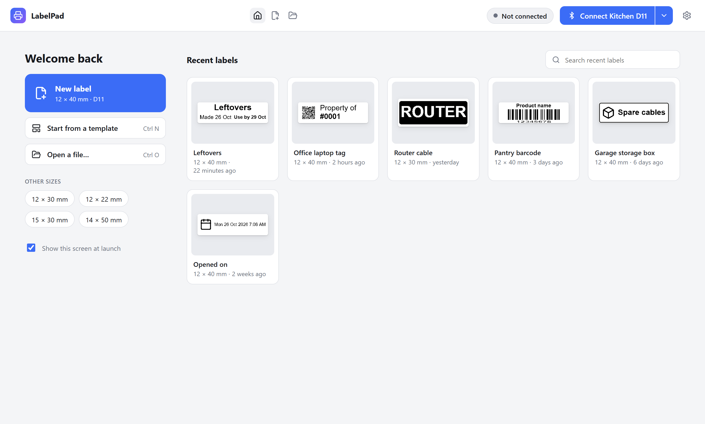
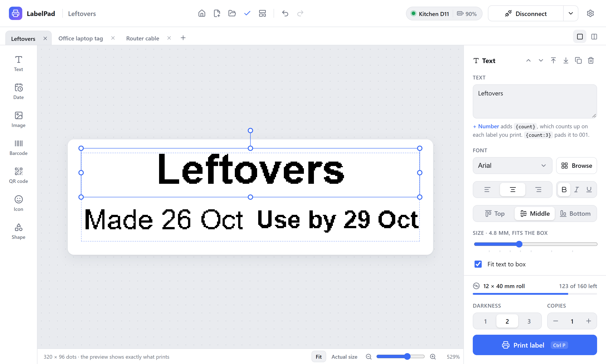
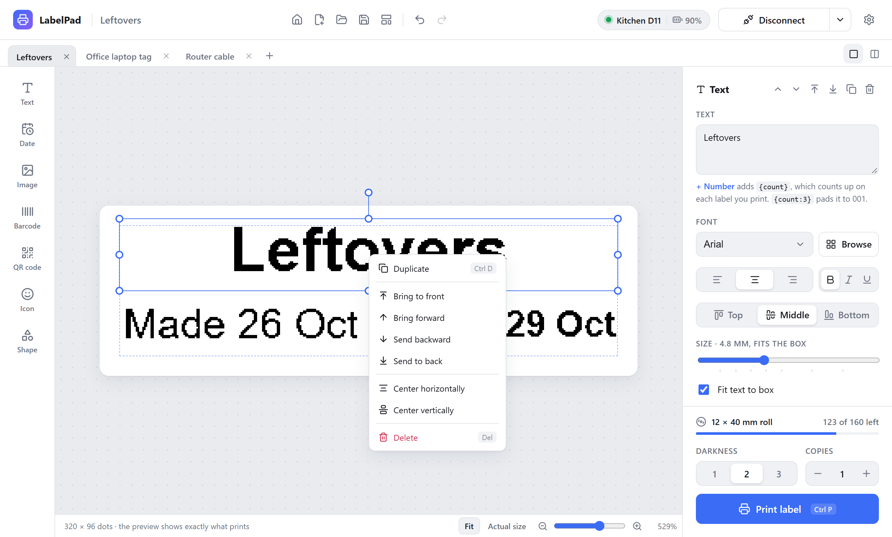
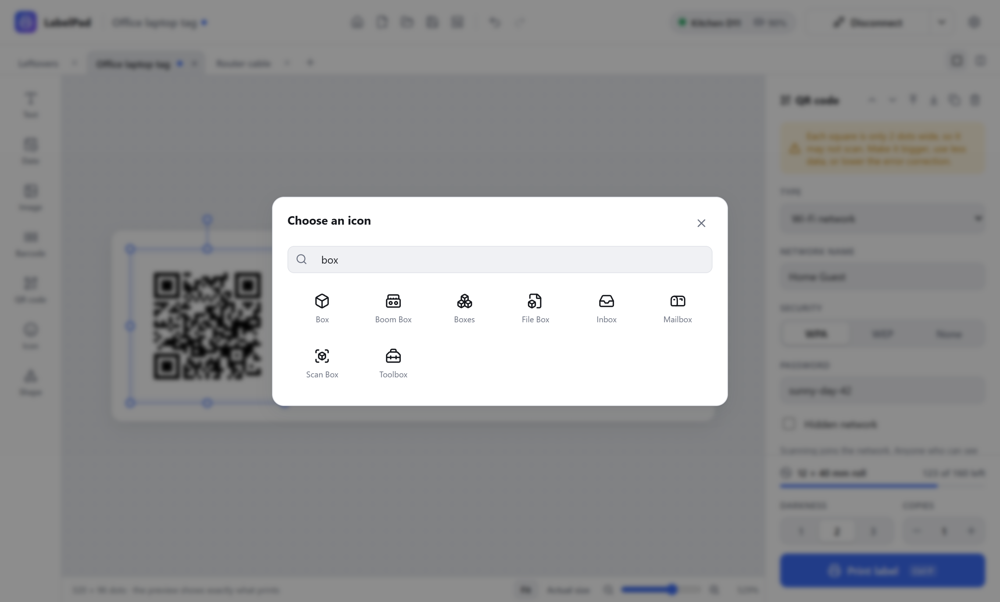
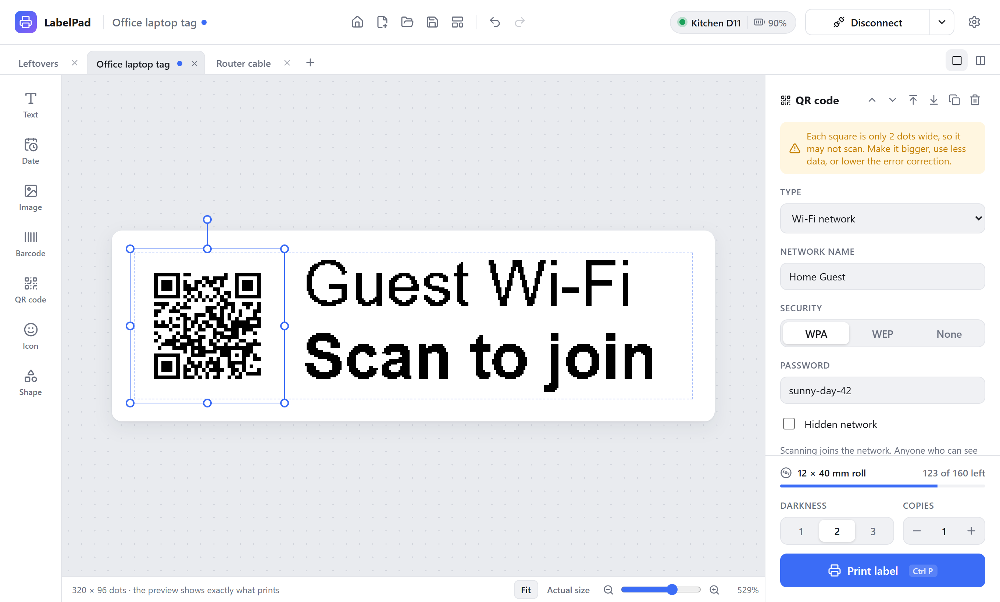
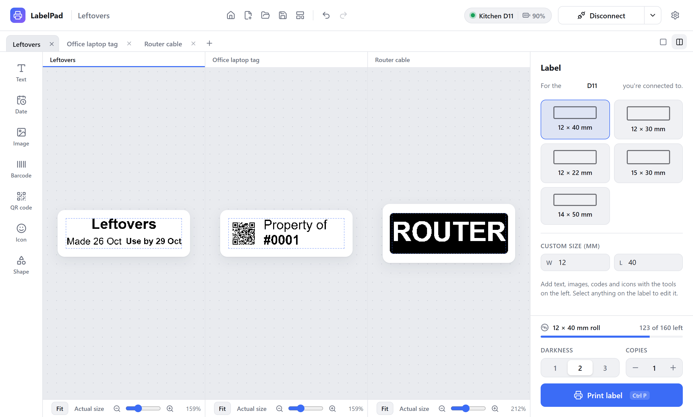

Guide
Everything you need to go from a fresh install to a drawer full of labels.
Install
Download the installer for your computer from the download section or the latest release on GitHub.
Windows
Run the .exe installer. The app isn't code-signed yet, so Windows SmartScreen may say "Windows protected your PC". Click More info, then Run anyway. Use the .msi if you deploy software with Group Policy or Intune.
macOS
Open the .dmg and drag LabelPad into Applications. Because the app isn't notarized yet, macOS blocks the first launch. Open System Settings → Privacy & Security and click Open Anyway. If macOS says the app "is damaged", run this once in Terminal:
xattr -cr "/Applications/LabelPad.app"The first time you connect, macOS asks for permission to use Bluetooth. Allow it.
Linux
Use the .AppImage on any distribution (make it executable with chmod +x), or install the .deb or .rpm. Bluetooth goes through BlueZ, so the Bluetooth service must be running and your user needs access to it, usually by being in the bluetooth group.
The installers register .labelpad files with LabelPad, so double-clicking a label in your file manager opens it in the app.
Connect the printer
- Turn the printer on. You don't need to pair it in your system's Bluetooth settings.
- Click Connect printer in the top right and pick your printer from the list.
- The header shows its name and battery, and the right panel shows the loaded label roll.
From then on, the button says Connect with your printer's name. Click it and LabelPad looks for that printer and connects as soon as it appears. If it can't find it, the printer list opens instead.
The arrow beside the button has two more options. Switch printer opens the list so you can pick a different one. The printer you used last stays pinned at the top and the others keep the order they were found in, so nothing moves just as you click. Rename gives your printer a name of your own, such as Kitchen D11, which then shows on the button, the status badge and in the list.

The start screen
LabelPad opens on a start screen. New label starts a blank label in the size you used last, and the chips under Other sizes start one in another common size. Start from a template and Open a file do what they say, and Continue editing appears when labels from last time are still open.
On the right are the 10 labels you opened or saved most recently, newest first, each with a preview, its size and when it last changed. Search them by name, or use the × on a card to take it off the list (the file itself is left alone). Files that were moved or deleted drop off by themselves.

The house icon in the header brings the start screen back at any time. To skip it at launch, untick Show this screen at launch, or turn it off in Settings.
The editor
The window has three parts. On the left are the things you can add. In the middle is the label, drawn at the printer's real resolution (8 dots per millimetre on the D11, about 12 on the M3), so the preview is exactly what prints. On the right, the panel changes with what you've selected: the label's size when nothing is selected, or the settings of the item you clicked. The print controls sit at the bottom of that panel.

Drag items to move them, pull the handles to resize, and use the round handle to rotate. Undo and redo cover every change.
While you move or resize, items snap to the dashed safe-margin guide, the label's center, and the edges and centers of other items, and they snap to equal gaps between items. A pink line shows what they snapped to. Hold Alt (Option on a Mac) to move freely.
A faint dashed line marks 1 mm in from the label's edge. Printers don't print reliably right at the edge, so keep anything important inside it. Under Position on label, the edge buttons move an item to these guides, and Fill, Width and Height stretch it to fill the label up to them. QR codes, icons and images keep their shape and grow as large as fits.
Right-click an item for Duplicate, its stacking order (bring to front, bring forward, send backward, send to back), Center horizontally, Center vertically, Fill to guides and Delete.

Zoom
The bar under the label sets how big it shows. Fit fills the space available, Actual size shows it at about the size it prints, and the slider and buttons zoom in between. You can also hold Ctrl and scroll, or pinch on a trackpad. The zoom you pick is remembered.
Label size and printer
With nothing selected, the right panel sets the label size. Pick one of the common sizes or type your own width and length in millimetres. While a printer is connected, the label is laid out for that printer; otherwise choose the printer it's for (D11 or M3). If a label was laid out for the other printer, a Convert button switches it, and it's converted automatically when it prints.
Drop or paste
Drag an image file onto the window, or paste an image you copied, and it becomes an image item. Text, or a .txt file, becomes a text box. Dropping a .labelpad file opens it.
LabelPad remembers the window's size and position, and whether it was maximized. If that spot is no longer on a screen, say after unplugging a monitor, it brings the window back onto one.
What you can add
| Item | What it does |
|---|---|
| Text | Any font installed on your computer, bold, italic or underlined, aligned left, center or right and top, middle or bottom. Fit text to box sizes it to fill the box, and White on black inverts it. The size slider always shows the size in millimetres; moving it turns fitting off. |
| Date | The date and/or time at the moment you print. See Dates and times. |
| Image | Any picture from your computer. Photo keeps shading with dithering; Logo gives crisp black and white edges, with a slider for how dark counts as black. |
| Barcode | Code 128, Code 39, EAN-13, EAN-8, UPC and ITF-14, with or without the number underneath. |
| QR code | Links, text, email, Wi-Fi, phone numbers, text messages, contacts and map locations. See QR codes. |
| Icon | The whole Lucide set, about 1,900 clean line icons. The picker opens on popular label icons; search by name to find the rest. |
| Shape | Rectangles, ellipses and lines, outlined or filled, for borders and dividers. |

Choosing a font
The font list in the text panel shows popular fonts first, then everything else installed. Click Browse to see every font with your label's text as the preview, filtered by style.

QR codes
Choose what the code is for under Type, then fill in its fields. LabelPad builds the code in the form phones expect, so scanning it does the right thing.
| Type | Scanning it |
|---|---|
| Link | Opens the web address. |
| Text | Shows the text. |
| Starts an email with the address, subject and message filled in. | |
| Wi-Fi network | Joins the network. Choose WPA, WEP or none, and tick Hidden network if it doesn't broadcast its name. Anyone who can see the label can read the password. |
| Phone call | Offers to call the number. |
| Text message (SMS) | Starts a text to the number with your message. |
| Contact card | Offers to save a contact with name, phone, email, company, job title, website and address. |
| Map location | Opens a map at the latitude and longitude. Long-press a place in a map app to copy them. |
LabelPad tells you how many squares the code has and how big each one prints, and warns you when they're too small to scan reliably. If it does, make the code bigger, put less in it, or lower the error correction. Small labels hold less than you'd think: a Wi-Fi code on a 12 mm label is right at the limit.

Dates and times
A date item fills itself in when you print. Choose Date + time, Date or Time, then a date format. System format follows your computer's region settings. Times print as hours and minutes, in 12-hour or 24-hour form.

Text before adds words such as Made or Use by, and Add days moves the date forward, which is how the Food container template prints a use-by date three days out.
To make your own format, type a pattern with these tokens. Anything else prints as written.
| Token | Example | Token | Example |
|---|---|---|---|
YYYY | 2026 | YY | 26 |
MMMM | October | MMM | Oct |
MM | 10 | M | 10 |
DD | 04 | D | 4 |
dddd | Saturday | ddd | Sat |
Numbered labels
Put {count} anywhere in text, a barcode or a QR code. The + Number link under the text box adds it for you.
- Printing 3 copies of
Box {count}gives Box 1, Box 2 and Box 3. {count:3}pads the number to three digits: 001, 002, 003.- Start at and Count by appear in the print panel once a label has a number.
- After printing, the counter moves on, so the next print continues where the last one stopped. It's saved with the label.

Selecting and aligning
Shift-click items to select several, or drag a box around them from an empty part of the label. Drag any selected item to move them all together.
The panel then offers alignment. To each other lines the items up with the outer edges of the selection; To the label lines them up with the label itself. Distribute spaces items evenly, which needs three or more when aligning to each other. A single item can be centered on the label from its own panel or its right-click menu.

Several labels at once
Every label you open or start gets its own tab, with its own file, undo history and selection. A dot on a tab means it has unsaved changes. Click a tab to switch, or press Ctrl+Tab for the next one. Close one with its ×, a middle-click or Ctrl+W. The tabs you had open come back the next time you start the app.
The two buttons at the right of the tab bar switch between one label at a time and every label side by side. Side by side, click a label to edit it.

Templates and files
New (Ctrl+N) opens the template gallery: a blank label, a shortcut to open a saved label, the built-in templates, and any label you saved with Save as template.

Labels save as .labelpad files that you can keep, share and open again. New labels save to a LabelPad folder in your Documents, which LabelPad creates for you. After that, Save and Open start in the folder you last saved to. In Settings you can pick a different folder, or always start in the save folder.
The labels you were working on reopen when you start the app, even if you never saved them. You can turn that off in Settings.
Printing and label rolls
Choose a darkness from 1 to 3 and the number of copies, then click Print or press Ctrl+P. The button fills up as labels are sent and printed, then says Printed, or Try again if something went wrong. If labels come out faint, raise the darkness; if fine detail bleeds together, lower it.
Genuine Niimbot rolls carry an RFID tag. Once connected, the app shows how many labels are left on the roll. The tag doesn't say how big the labels are, so the first time you load a type of roll the app asks once and remembers. After that, if your label doesn't match the roll, it offers to switch.
Settings
The gear icon in the top right opens Settings. Darkness, copies, label size, zoom and your printer are remembered automatically; the rest is here.
| Section | What it sets |
|---|---|
| Appearance | Follow your system, or always use light or dark. |
| Startup | Whether to reopen the labels you were working on, and whether to show the start screen. |
| Saving | The folder new labels save to (Change…, or Use default to go back to Documents\LabelPad), and whether Save and Open start in the last folder you saved to. |
| Printer | The printer quick connect looks for. Forget clears it, so the next Connect opens the printer list. |
| Updates | The weekly check for new versions, and Check now. |
The bottom of the window shows the version of LabelPad you're running, with a link to the release notes.

Updates
Once a week LabelPad checks for a new version. When there is one, it shows what's new and asks: Update now downloads it and restarts the app, and Later asks again next week. Nothing installs without asking. On Linux, the AppImage updates itself; if you installed the .deb or .rpm, the app links you to the new package instead.
AI agents (MCP)
LabelPad is also an MCP server, so an AI agent such as Claude can connect your printer, design a label and print it the way you would. The agent works in the open LabelPad window: you see each change as it's made and can undo it. If LabelPad isn't running, the agent starts it.
Add LabelPad to your agent's MCP settings with the path to the app and the --mcp argument. For Claude Desktop, that's claude_desktop_config.json:
{
"mcpServers": {
"labelpad": {
"command": "C:\\Users\\you\\AppData\\Local\\LabelPad\\labelpad.exe",
"args": ["--mcp"]
}
}
}- Windows: the installer puts the app at
%LOCALAPPDATA%\LabelPad\labelpad.exe. - macOS: the command is
/Applications/LabelPad.app/Contents/MacOS/labelpad. - Claude Code: run
claude mcp add labelpad -- "<path to labelpad>" --mcp.
The agent can find and connect printers (with no name, it reconnects the last one), start labels blank or from a template, add and change text, dates, images, barcodes, QR codes, icons and shapes in millimetres, look at the exact image that will print to check its work, and open, save and print .labelpad files. It keeps things inside the safe margin the way snapping does for you. Try asking: "Make a 12×40 label that says Spices with a jar icon, and print two."
Keyboard shortcuts
On a Mac, use ⌘ where this says Ctrl.
| Shortcut | Action |
|---|---|
| Ctrl+N | New label from a template |
| Ctrl+O | Open a label |
| Ctrl+S / Ctrl+Shift+S | Save / save as |
| Ctrl+W | Close the tab |
| Ctrl+Tab / Ctrl+Shift+Tab | Next / previous tab |
| Ctrl+Z / Ctrl+Shift+Z | Undo / redo (Ctrl+Y also redoes) |
| Ctrl+A | Select everything |
| Ctrl+D | Duplicate |
| Delete | Remove |
| Arrow keys | Nudge by 1 dot (with Shift, 1 mm) |
| Ctrl + scroll | Zoom |
| Hold Alt while dragging | Move or resize without snapping |
| Ctrl+P | |
| Esc | Deselect |
Troubleshooting
The printer doesn't appear in the list
Make sure it's on and not connected to your phone; a Niimbot printer talks to one device at a time. Close the Niimbot phone app or turn off your phone's Bluetooth, then try again. Check that Bluetooth is on in your computer's settings.
Connect looks for the wrong printer
Quick connect looks for the printer you used last. Pick another with Switch printer in the menu beside Connect, or Forget the last one in Settings.
It connects, then drops
Move closer, and charge the printer if the battery is low. Disconnect and reconnect from the header.
The print is shifted or cut off
Check that the label size in the editor matches the roll you loaded. The roll panel warns you when they differ. Keep text and codes inside the dashed safe-margin line.
A QR code won't scan
Read the note under the code's settings. If it says the squares are too small, make the code bigger, put less in it, or lower the error correction.
Still stuck?
Open an issue on GitHub with your printer model, your operating system, the LabelPad version from Settings, and what happened.
Build from source
You need Node.js 22 or newer, Rust (stable), and the Tauri prerequisites for your system. On Linux that includes libwebkit2gtk-4.1-dev and libdbus-1-dev.
git clone https://github.com/derhally/labelpad
cd labelpad
npm install
npm run dev # run with hot reload
npm run build # build an installer for this systemThe app is Tauri 2: a React and TypeScript editor in the system webview, and a Rust backend that talks to the printer over Bluetooth LE. The printer protocol is a Rust port of niimbluelib, tested byte for byte against it.
Releases are automatic. Commit messages follow Conventional Commits (feat:, fix:), and release-please turns them into a release pull request with the changelog. Merging it publishes the release and attaches installers for every platform.